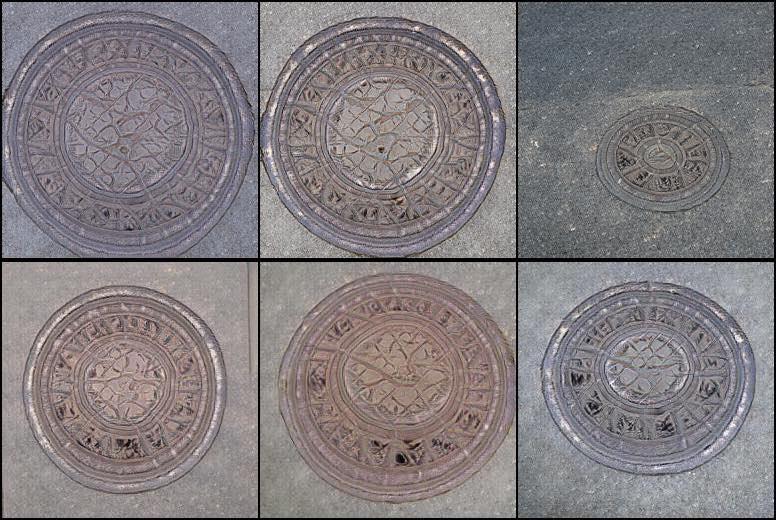
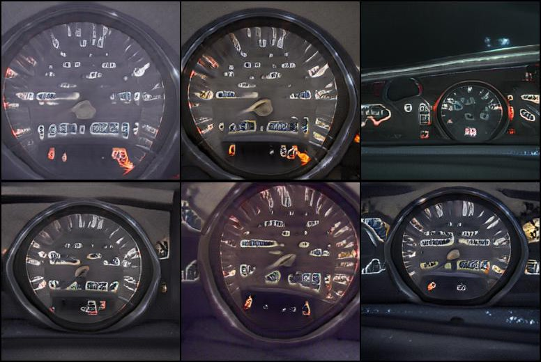

Interpreting Class Conditional GANs with Channel Awareness
1HKUST
2ByteDance Inc.
Category-oriented Attributes
Category: Boston Bull
| Mouth | Ear | Face | Tongue |
Category: Brambling
| Body Size | Head Pose | Belly | Feather |
Category: Volcano
| Mountain Size | Ash | Fire | Sky |
 |
Category: Castle
| Width | Cloud | Foreground | Water |
Latent-oriented Attributes
| Bubble | Great Grey Owl | Bee Eater | Speedboat | Lifeboat | |
|
Size
|
|||||
|
Background
|
 |
||||
|
Style
|
Fuse the characteristics of two classes: mix features regarding the class-relevant channels.
Segment synthesized samples: perform clustering on per-pixel features weighted by channel awareness.
Categories with high total channel awareness: high quality and low diversity.
| Manhole Cover | Rapeseed | Odometer | Website | Cypripedium parviflorum |
|  |  |  |
||
Categories with low total channel awareness: low quality and high diversity.
| Chainsaw | Stretcher | Reel | Plastic Bag | Barrow |  |
@article{he2022interpreting,
title = {Interpreting Class Conditional GANs with Channel Awareness},
author = {He, Yingqing and Zhang, Zhiyi and Zhu, Jiapeng and Shen, Yujun and Chen, Qifeng},
article = {arXiv preprint arXiv:TODO},
year = {2022}
}

Comment: Proposes a large-scale conditional GAN, i.e., BigGAN, trained on ImageNet.